I think the sky is one of the most beautiful creations of god (apart from you, my cute reader ofc). Its several moods are always depicted in some crazy colours. Some might say that these are just its many 'faces' and compare it to humans with double faces etc. But I honestly like to think of it as its many moods. Deep hues of red, cotton candy and mango coloured skies make me want to gobble it down. These few pics below give you an idea of why I feel this way about the sky:
 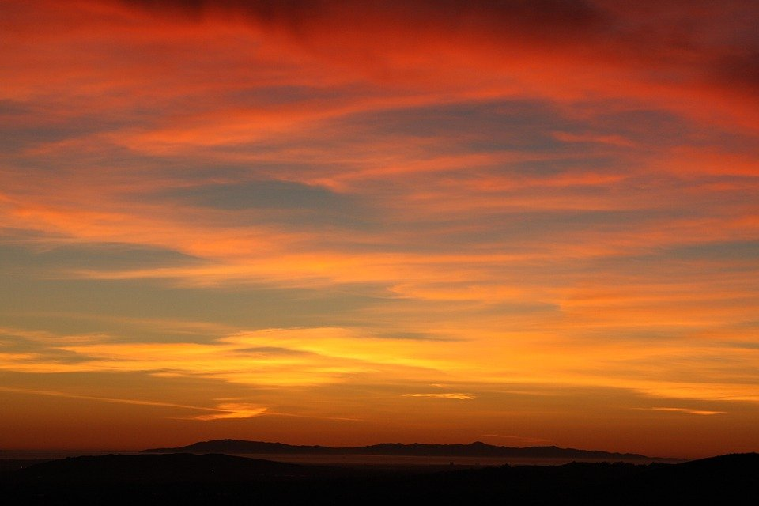
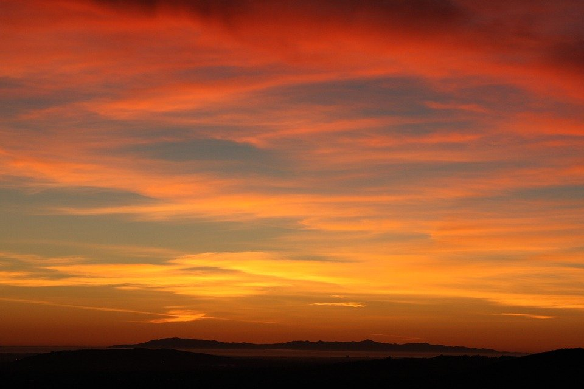
 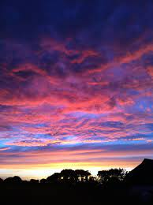
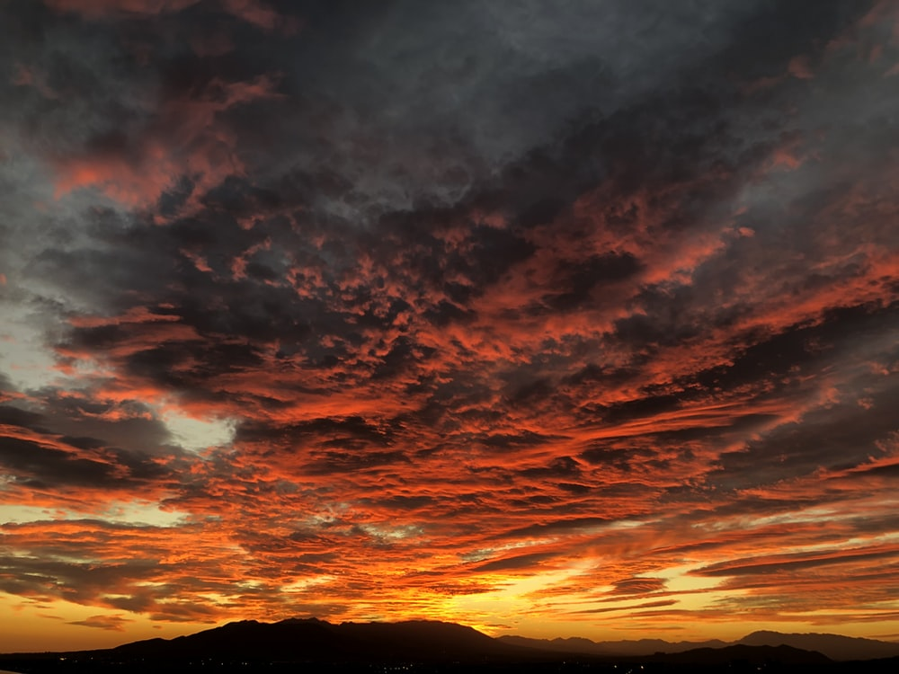
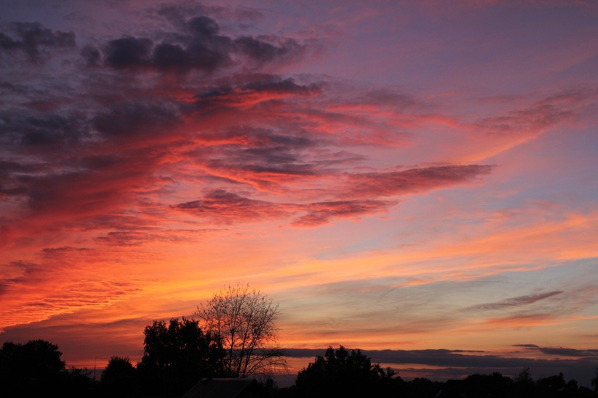
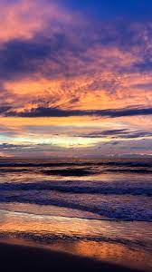
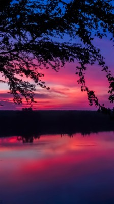
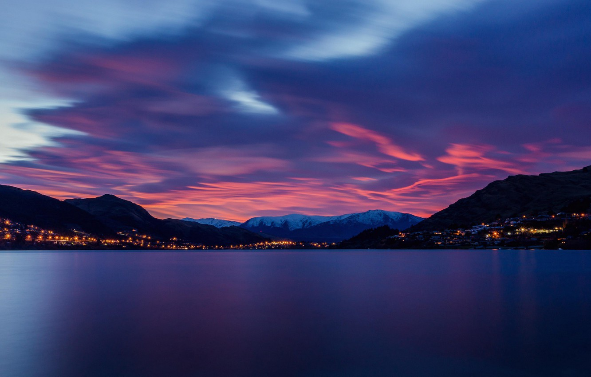
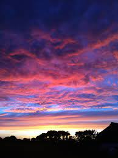
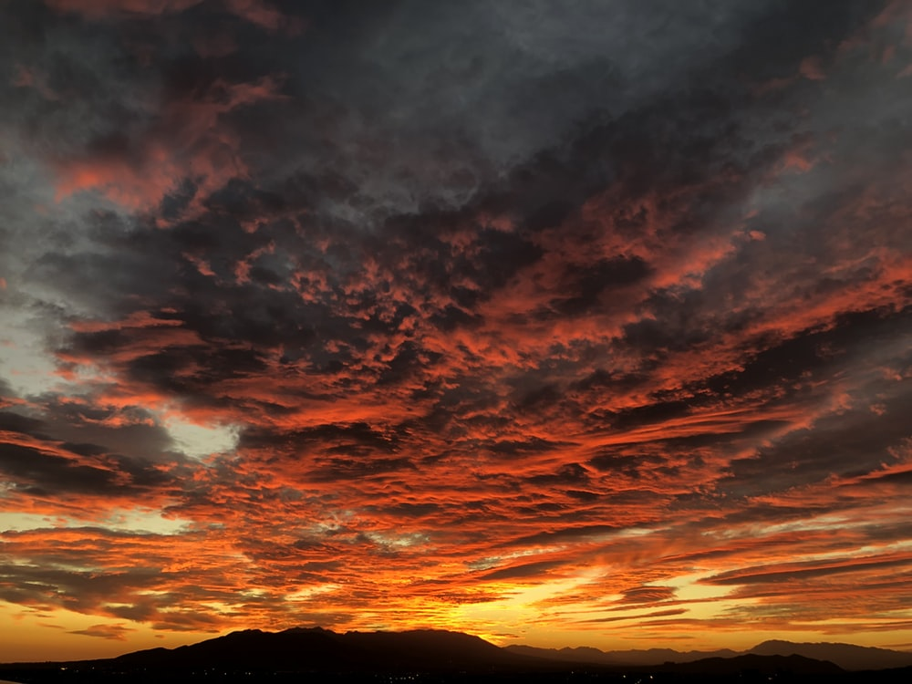
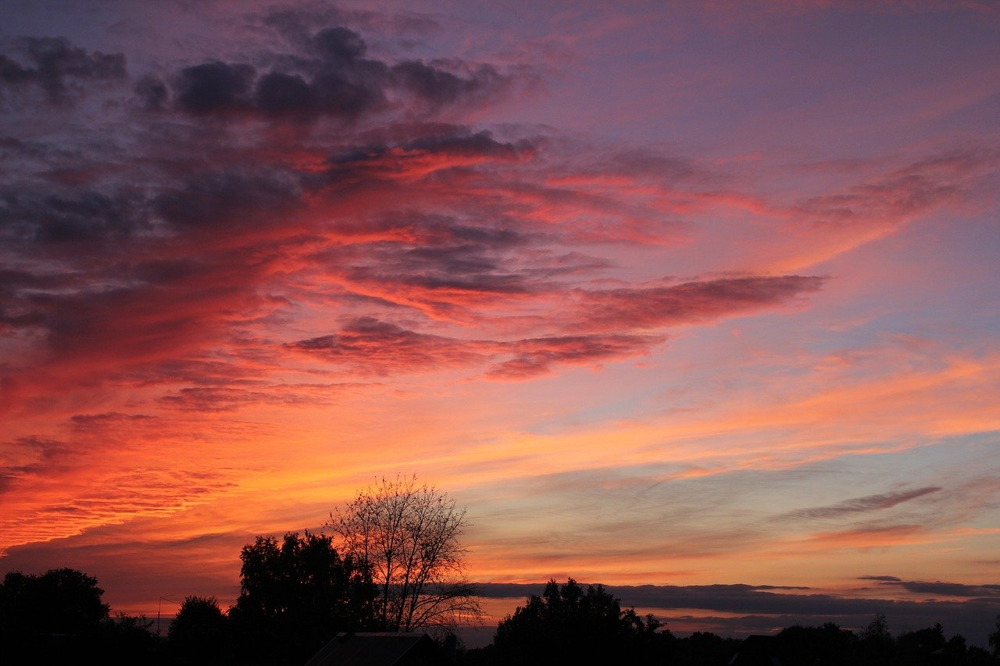
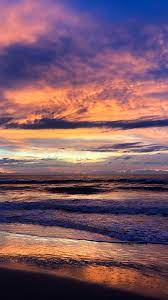
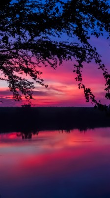
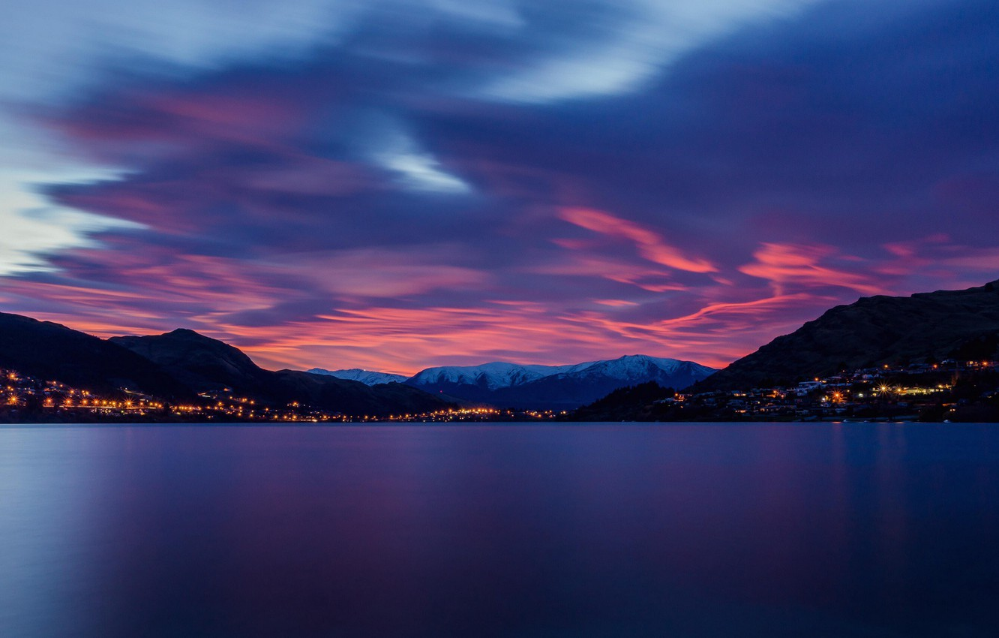